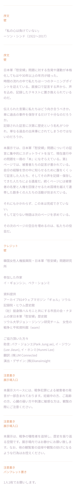
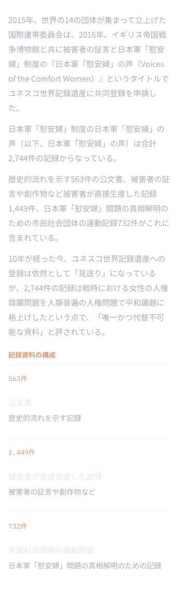
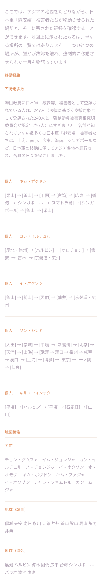
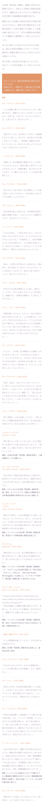
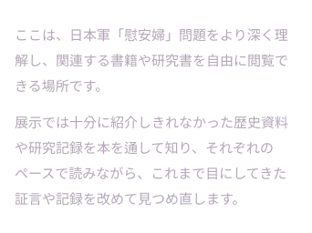

韓国女性人権振興院 日本軍「慰安婦」問題研究所 主催 特別展示
証言— 次のページ
2,745番目の記録
手渡された言葉に、私たちはどう向き合うべきか。2,744件の記録の次のページとなる、2,745番目の記録を書くための旅が始まる。
ソウル アラアートセンター2026.10.23（金）～ 11.11（水）
大邱 アートスペース ルモス2026.11.15（日）～ 12.04（金）
観覧前のご案内
本展示スペースには、戦争犯罪による被害者の発言が一部含まれております。妊娠中の方、ご高齢の方、心臓の弱い方や刺激に敏感な方は、観覧の際にご注意ください。
「私の心は負けていない」
— ソン・シンド（1922〜2017）
本展示では、日本軍「慰安婦」問題についての証言に集中的にスポットライトを当て、現在進行中の問題を一冊の「本」になぞらえている。それにもかかわらず、この本は完成できていない。そして足りない物語は次のページを求めている。その次のページの空白を埋めるのは、私たちの役目だ。
セクション別ご案内
01 総合案内入口の序文・クレジット・観覧上のご案内。

02 序文：年表の道1975年から2026年まで、証言者と研究者たちが歩んだ運動史の流れ。

03 第1部・現在史：2,744件の記録ユネスコ世界記録遺産に共同登録を申請した記録2,744件。

04 第2部：証言の声キム・ボクドン、カン・イルチュル、イ・オクソン、ソン・シンド、キル・ウォンオク。5人の証言者と向き合う。
05 記憶の経路アジアの地図をたどり、被害者たちが移動させられた場所と記録を確認する。

06 人生が示した証言被害者自身の作品と、記録、そして後世の作家たちの作品。

07 転換通路白い布と壁に残された、23人の言葉。

08 第3部：数字が残した言葉数字を手がかりに、日本軍「慰安婦」問題の歴史を見つめ直す。

09 書庫の森関連する書籍や研究書を自由に閲覧できる場所。

韓国女性人権振興院 日本軍「慰安婦」問題研究所
展示会場を、そのままオンラインに
2,745番目の記録
9つの展示空間を360度で巡ることができる3D仮想展示館です。下の展示室を選ぶか、入場ボタンから全体の動線をたどってください。